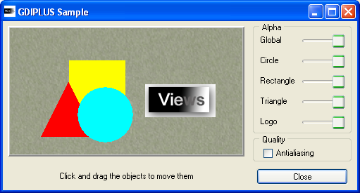

gdiplusThis sample shows the GDI+ features used in Rogue Wave Views.
This sample shows the GDI+ features used in Rogue Wave Views : Transparency and Anti-aliasing. It allows you to change the transparency of the displayed objects, as well as the antialiasing mode used. Note that this sample use Rogue Wave Script to perform the actions, and that the C++ part only load the ILV file containing both the GUI and the script functions.
IlvGadgetContainer